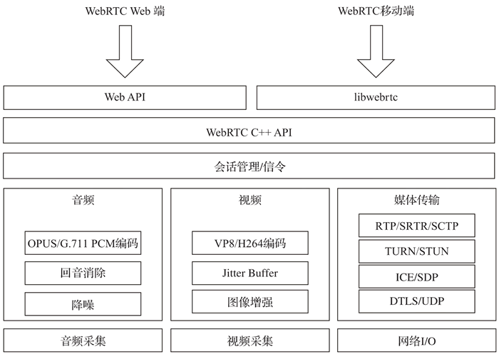
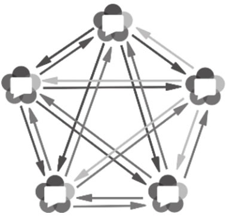
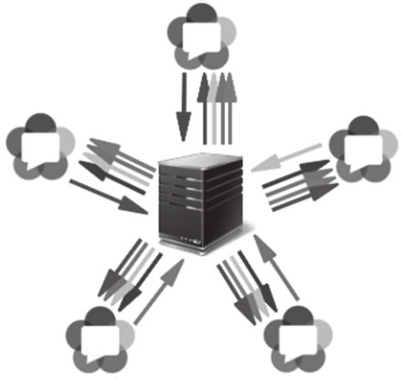

首页 > 编程笔记
WebRTC技术介绍（非常详细）
WebRTC（Web Real-Time Communication）是一个谷歌开源项目，它提供了一套标准 API，使 Web 应用可以直接提供实时音视频通信功能，不再需要借助任何插件。原生通信过程采用 P2P 协议，数据直接在浏览器之间交互，理论上不需要服务器端的参与。
“为浏览器、移动平台、物联网设备提供一套用于开发功能丰富、高质量的实时音视频应用的通用协议”是 WebRTC 的使命。
WebRTC 的出现使实时通信技术得以广泛应用。WebRTC 制定、实现了一套统一且完整的实时通信标准，并将这套标准开源。这套标准包含了实时通信技术涉及的所有内容，使用这套标准，开发人员无须关注音视频编解码、网络连接、传输等底层技术细节，可以专注于构建业务逻辑，且这些底层技术是完全免费的。
WebRTC 统一了各平台的实时通信技术，大部分操作系统及浏览器都支持 WebRTC，无须安装任何插件，就可以在浏览器端发起实时视频通话。
WebRTC 技术最初为 Web 打造，随着 WebRTC 自身的演进，目前已经可以将其应用于各种应用程序。
随着 4G 的普及和 5G 技术的应用，实时音视频技术正在蓬勃发展。在互联网领域，花椒、映客等直播平台吸引了大量的用户；在教育领域，通过实时直播技术搭建的“空中课堂”惠及全球数亿学生；在医疗行业，随着电子处方单纳入医保，互联网看病、复诊正在兴起，地域之间医疗资源不均衡的问题被实时直播技术逐步消除。
WebRTC 1.0 规范发布以来，以 Chrome、Firefox 为代表的浏览器对 WebRTC 提供了全方面的支持，Safari 11 也开始对 WebRTC 提供支持。
WebRTC的发展历史如下：
WebRTC 技术架构的顶层分为两个部分：
第二层是 WebRTC C ++ API，它是 Web API 和 libwebrtc 的底层实现。该层包含了连接管理、连接设置、会话状态和数据传输的 API。基于这些 API，浏览器厂商可以方便地加入对 WebRTC 的支持。
WebRTC 规范里没有包含信令协议，这部分需要研发人员依据业务特点自行实现。
WebRTC 支持的音频编码格式有 OPUS 和 G.711，同时还在音频处理层实现了回音消除及降噪功能。WebRTC 支持的视频编码格式主要有 VP8 和 H264（还有部分浏览器支持 VP9 及 H265 格式），WebRTC 还实现了 Jitter Buffer 防抖动及图像增强等高级功能。
在媒体传输层，WebRTC 在 UDP 之上增加了 3 个协议：
WebRTC 借助 ICE 技术在端与端之间建立 P2P 连接，它提供了一系列 API，用于管理连接。WebRTC 还提供了摄像头、话筒、桌面等媒体采集 API，使用这些 API 可以定制媒体流。
使用媒体服务器的场景，通常是因为 P2P 连接不可控，而使用媒体服务器可以对媒体流进行修改、分析、记录等 P2P 无法完成的操作。
实际上，如果我们把媒体服务器看作 WebRTC 连接的另外一端，就很容易理解媒体服务器的工作原理了。媒体服务器是 WebRTC 在服务器端的实现，起到了桥梁的作用，用于连接多个 WebRTC 客户端，并增加了额外的媒体处理功能。通常根据提供的功能，将媒体服务器区分成 MCU 和 SFU。
Mesh 网络结构如图 2 所示。
在 Mesh 网络结构中，每个参与者都以 P2P 的方式相互连接，数据交换基本不经过中央服务器（部分无法使用 P2P 的场景，会经过 TURN 服务器）。由于每个参与者都要为其他参与者提供独立的媒体流，因此需要 N-1 个上行链路和 N-1 个下行链路。众多上行和下行链路限制了参与人数，参与人过多会导致明显卡顿，通常只能支持 6 人以下的实时互动场景。
由于没有媒体服务器的参与，Mesh 网络结构难以对视频做额外的处理，不支持视频录制、视频转码、视频合流等操作。

图 3 MCU网络结构
这种场景下，每个参与者只需要 1 个上行链路和 1 个下行链路。与 Mesh 网络结构相比，参与者所在的终端压力要小很多，可以支持更多人同时在线进行音视频通信，比较适合多人实时互动场景。但是 MCU 服务器负责所有视频编码、转码、解码、合流等复杂操作，服务器端压力较大，需要较高的配置。同时由于合流画面固定，界面布局也不够灵活。
我们可以将 SFU 服务器视为一个 WebRTC 参与方，它与其他所有参与方进行 1 对 1 的建立连接，并在其中起到桥梁的作用，同时转发各个参与者的媒体数据。SFU 服务器具备复制媒体数据的能力，能够将一个参与者的数据转发给多个参与者。
SFU 服务器与 TURN 服务器不同，TURN 服务器仅仅是为 WebRTC 客户端提供的一种辅助数据转发通道，在无法使用 P2P 的情况下进行透明的数据转发，TURN 服务器不具备复制、转发媒体数据的能力。
SFU 对参与实时互动的人数也有一定的限制，适用于在线教学、大型会议等场景，其网络结构如图 4 所示。
MCU 可以根据参与者的网络质量和设备能力，提供不同的清晰度和码率。但是随之而来的问题是服务器资源压力较大，难以支撑大规模并发，同时也显著增加了使用成本。
多人会话场景选择 SFU 网络结构是目前通用的做法。早期的 SFU 只是将媒体流从发送端转发给接收端，无法独立为不同参与者调整视频码率，其结果是发送者需要自行调整码率，以适应接收条件最差的参与者。而那些网络环境较好的参与者只能接收相同质量的媒体流，别无选择。
Simulcast 技术对 SFU 进行了优化，发送端可以同时发送多个不同质量的媒体流给接收端。SFU 能够依据参与者的网络质量，决定转发给参与者哪种质量的媒体流。
因为发送者需要发送多个不同质量的媒体流，所以会显著增加发送设备的载荷，同时占用发送者上行带宽资源。
SVC 中多个层次的媒体流相互依赖，较高质量的媒体数据需要较低质量的媒体数据解码。SFU 接收到 SVC 编码的内容后，根据客户端的接收条件选择不同的编码层次，从而获得不同质量的媒体流。
如果媒体流包括多个不同分辨率的层，则称该编码具有空间可伸缩性；如果媒体流包含多个不同帧率的层，则称该编码具有时间可伸缩性；如果媒体流包含多个不同码率的层，则称该编码具有质量可伸缩性。
在编码空间、时间、质量均可伸缩的情况下，SFU 可以生成不同的视频流，以适应不同客户端的接收条件。
Android 和 iOS 原生应用都支持 WebRTC，可以使用原生 SDK 开发跨平台的 WebRTC 应用。
Android WebView 自 36 版本之后，提供了对 WebRTC 的支持，这意味可以使用 WebRTC API 开发 Android 混合 App。注意，一些手机厂商对部分 Android 版本里的 WebView 进行了裁剪，导致不能使用 WebRTC，这时候下载并安装最新的 WebView 即可。
iOS WebView 目前还不支持 WebRTC，但是可以使用 cordova 的插件 cordova-plugin-iosrtc 在混合 App 中使用 WebRTC。
WebRTC 目前处于活跃开发阶段，各个浏览器的实现程度不一样。为了解决兼容性的问题，谷歌提供了 adapter.js 库。
在 GitHub 上可以下载最新版本的 adapter.js 库，地址是 https://github.com/webrtc/adapter/tree/master/release。将下载的文件放到 Web 服务器根目录，在 Web 应用中引用。
“为浏览器、移动平台、物联网设备提供一套用于开发功能丰富、高质量的实时音视频应用的通用协议”是 WebRTC 的使命。
WebRTC的历史
随着网络基础设施日趋完善以及终端计算能力不断提升，实时通信技术已经渗透到各行各业，支撑着人们的日常生活。在 WebRTC 诞生之前，实时通信技术非常复杂，想获得核心的音视频编码及传输技术需要支付昂贵的专利授权费用。此外，将实时通信技术与业务结合也非常困难，并且很耗时，通常只有较大规模的公司才有能力实现。WebRTC 的出现使实时通信技术得以广泛应用。WebRTC 制定、实现了一套统一且完整的实时通信标准，并将这套标准开源。这套标准包含了实时通信技术涉及的所有内容，使用这套标准，开发人员无须关注音视频编解码、网络连接、传输等底层技术细节，可以专注于构建业务逻辑，且这些底层技术是完全免费的。
WebRTC 统一了各平台的实时通信技术，大部分操作系统及浏览器都支持 WebRTC，无须安装任何插件，就可以在浏览器端发起实时视频通话。
WebRTC 技术最初为 Web 打造，随着 WebRTC 自身的演进，目前已经可以将其应用于各种应用程序。
随着 4G 的普及和 5G 技术的应用，实时音视频技术正在蓬勃发展。在互联网领域，花椒、映客等直播平台吸引了大量的用户；在教育领域，通过实时直播技术搭建的“空中课堂”惠及全球数亿学生；在医疗行业，随着电子处方单纳入医保，互联网看病、复诊正在兴起，地域之间医疗资源不均衡的问题被实时直播技术逐步消除。
WebRTC 1.0 规范发布以来，以 Chrome、Firefox 为代表的浏览器对 WebRTC 提供了全方面的支持，Safari 11 也开始对 WebRTC 提供支持。
WebRTC的发展历史如下：
- 2010 年 5 月，谷歌收购视频会议软件公司 GIPS，该公司在 RTC 编码方面有深厚的技术积累。
- 2011 年 5 月，谷歌开源 WebRTC 项目。
- 2011 年 10 月，W3C 发布第一个 WebRTC 规范草案。
- 2014 年 7 月，谷歌发布视频会议产品 Hangouts，该产品使用了 WebRTC 技术。
- 2017 年 11 月，WebRTC 进入候选推荐标准（Candidate Recommendation，CR）阶段。
WebRTC的技术架构
从技术实现的角度讲，在浏览器之间进行实时通信需要使用很多技术，如音视频编解码、网络连接管理、媒体数据实时传输等，还需要提供一组易用的 API 给开发者使用。这些技术组合在一起，就是 WebRTC 技术架构，如图 1 所示。

图 1 WebRTC技术架构
图 1 WebRTC技术架构
WebRTC 技术架构的顶层分为两个部分：
- Web API：一组 JavaScript 接口，由 W3C 维护，开发人员可以使用这些 API 在浏览器中创建实时通信应用程序。
- 适用于移动端及桌面开发的 libwebrtc：即使用 WebRTC C++ 源码在 Windows、Android、iOS 等平台编译后的开发包，开发人员可以使用这个开发包打造原生的 WebRTC 应用程序。
第二层是 WebRTC C ++ API，它是 Web API 和 libwebrtc 的底层实现。该层包含了连接管理、连接设置、会话状态和数据传输的 API。基于这些 API，浏览器厂商可以方便地加入对 WebRTC 的支持。
WebRTC 规范里没有包含信令协议，这部分需要研发人员依据业务特点自行实现。
WebRTC 支持的音频编码格式有 OPUS 和 G.711，同时还在音频处理层实现了回音消除及降噪功能。WebRTC 支持的视频编码格式主要有 VP8 和 H264（还有部分浏览器支持 VP9 及 H265 格式），WebRTC 还实现了 Jitter Buffer 防抖动及图像增强等高级功能。
在媒体传输层，WebRTC 在 UDP 之上增加了 3 个协议：
- 数据包传输层安全性协议（DTLS）：用于加密媒体数据和应用程序数据；
- 安全实时传输协议（SRTP）：用于传输音频和视频流；
- 流控制传输协议（SCTP）：用于传输应用程序数据。
WebRTC 借助 ICE 技术在端与端之间建立 P2P 连接，它提供了一系列 API，用于管理连接。WebRTC 还提供了摄像头、话筒、桌面等媒体采集 API，使用这些 API 可以定制媒体流。
WebRTC的网络拓扑
WebRTC 规范主要介绍了使用 ICE 技术建立 P2P 的网络连接，即 Mesh 网络结构。在 WebRTC 技术的实际应用中，衍生出了媒体服务器的用法。使用媒体服务器的场景，通常是因为 P2P 连接不可控，而使用媒体服务器可以对媒体流进行修改、分析、记录等 P2P 无法完成的操作。
实际上，如果我们把媒体服务器看作 WebRTC 连接的另外一端，就很容易理解媒体服务器的工作原理了。媒体服务器是 WebRTC 在服务器端的实现，起到了桥梁的作用，用于连接多个 WebRTC 客户端，并增加了额外的媒体处理功能。通常根据提供的功能，将媒体服务器区分成 MCU 和 SFU。
1) Mesh网络结构
Mesh 是 WebRTC 多方会话最简单的网络结构。在这种结构中，每个参与者都向其他所有参与者发送媒体流，同时接收其他所有参与者发送的媒体流。说这是最简单的网络结构，是因为它是 Web-RTC 原生支持的，无须媒体服务器的参与。Mesh 网络结构如图 2 所示。

图 2 Mesh网络结构
图 2 Mesh网络结构
在 Mesh 网络结构中，每个参与者都以 P2P 的方式相互连接，数据交换基本不经过中央服务器（部分无法使用 P2P 的场景，会经过 TURN 服务器）。由于每个参与者都要为其他参与者提供独立的媒体流，因此需要 N-1 个上行链路和 N-1 个下行链路。众多上行和下行链路限制了参与人数，参与人过多会导致明显卡顿，通常只能支持 6 人以下的实时互动场景。
由于没有媒体服务器的参与，Mesh 网络结构难以对视频做额外的处理，不支持视频录制、视频转码、视频合流等操作。
2) MCU网络结构
MCU（Multipoint Control Unit）是一种传统的中心化网络结构，参与者仅与中心的 MCU 媒体服务器连接。MCU 媒体服务器合并所有参与者的视频流，生成一个包含所有参与者画面的视频流，参与者只需要拉取合流画面，MCU 网络结构如图 3 所示。图 3 MCU网络结构
这种场景下，每个参与者只需要 1 个上行链路和 1 个下行链路。与 Mesh 网络结构相比，参与者所在的终端压力要小很多，可以支持更多人同时在线进行音视频通信，比较适合多人实时互动场景。但是 MCU 服务器负责所有视频编码、转码、解码、合流等复杂操作，服务器端压力较大，需要较高的配置。同时由于合流画面固定，界面布局也不够灵活。
3) SFU网络结构
在 SFU（Selective Forwarding Unit）网络结构中，仍然有中心节点媒体服务器，但是中心节点只负责转发，不做合流、转码等资源开销较大的媒体处理工作，所以服务器的压力会小很多，服务器配置也不像 MCU 的要求那么高。每个参与者需要 1 个上行链路和 N-1 个下行链路，带宽消耗低于 Mesh，但是高于 MCU。我们可以将 SFU 服务器视为一个 WebRTC 参与方，它与其他所有参与方进行 1 对 1 的建立连接，并在其中起到桥梁的作用，同时转发各个参与者的媒体数据。SFU 服务器具备复制媒体数据的能力，能够将一个参与者的数据转发给多个参与者。
SFU 服务器与 TURN 服务器不同，TURN 服务器仅仅是为 WebRTC 客户端提供的一种辅助数据转发通道，在无法使用 P2P 的情况下进行透明的数据转发，TURN 服务器不具备复制、转发媒体数据的能力。
SFU 对参与实时互动的人数也有一定的限制，适用于在线教学、大型会议等场景，其网络结构如图 4 所示。

图 4 SFU网络结构
图 4 SFU网络结构
Simulcast联播
在进行 WebRTC 多方视频会话时，参与人数较多，硬件设施、网络环境均有差异，这种情况下如何确保会话质量呢？使用 MCU 时，这个问题相对简单一些。MCU 可以根据参与者的网络质量和设备能力，提供不同的清晰度和码率。但是随之而来的问题是服务器资源压力较大，难以支撑大规模并发，同时也显著增加了使用成本。
多人会话场景选择 SFU 网络结构是目前通用的做法。早期的 SFU 只是将媒体流从发送端转发给接收端，无法独立为不同参与者调整视频码率，其结果是发送者需要自行调整码率，以适应接收条件最差的参与者。而那些网络环境较好的参与者只能接收相同质量的媒体流，别无选择。
Simulcast 技术对 SFU 进行了优化，发送端可以同时发送多个不同质量的媒体流给接收端。SFU 能够依据参与者的网络质量，决定转发给参与者哪种质量的媒体流。
因为发送者需要发送多个不同质量的媒体流，所以会显著增加发送设备的载荷，同时占用发送者上行带宽资源。
可伸缩视频编码
可伸缩视频编码（Scalable Video Coding，SVC）是 Simulcast 的改进技术。它使用分层编码技术，发送端只需要发送一个独立的视频流给 SFU，SFU 根据不同的层，解码出不同质量的视频流，并发送给不同接收条件的参与者。SVC 中多个层次的媒体流相互依赖，较高质量的媒体数据需要较低质量的媒体数据解码。SFU 接收到 SVC 编码的内容后，根据客户端的接收条件选择不同的编码层次，从而获得不同质量的媒体流。
如果媒体流包括多个不同分辨率的层，则称该编码具有空间可伸缩性；如果媒体流包含多个不同帧率的层，则称该编码具有时间可伸缩性；如果媒体流包含多个不同码率的层，则称该编码具有质量可伸缩性。
在编码空间、时间、质量均可伸缩的情况下，SFU 可以生成不同的视频流，以适应不同客户端的接收条件。
WebRTC的兼容性
据caniuse.com统计，大部分浏览器都实现了对 WebRTC 的支持，各浏览器支持情况如下：- Firefox版本22+
- Chrome版本23+
- Safari版本11+
- iOS Safari版本11+
- Edge版本15+
- Opera版本18+
- Android Browser版本81+
- Chrome for Android版本84+
- Firefox for Android版本68+
- IE不支持
Android 和 iOS 原生应用都支持 WebRTC，可以使用原生 SDK 开发跨平台的 WebRTC 应用。
Android WebView 自 36 版本之后，提供了对 WebRTC 的支持，这意味可以使用 WebRTC API 开发 Android 混合 App。注意，一些手机厂商对部分 Android 版本里的 WebView 进行了裁剪，导致不能使用 WebRTC，这时候下载并安装最新的 WebView 即可。
iOS WebView 目前还不支持 WebRTC，但是可以使用 cordova 的插件 cordova-plugin-iosrtc 在混合 App 中使用 WebRTC。
WebRTC 目前处于活跃开发阶段，各个浏览器的实现程度不一样。为了解决兼容性的问题，谷歌提供了 adapter.js 库。
在 GitHub 上可以下载最新版本的 adapter.js 库，地址是 https://github.com/webrtc/adapter/tree/master/release。将下载的文件放到 Web 服务器根目录，在 Web 应用中引用。
<script src="adapter.js"></script>
关注公众号「站长严长生」，在手机上阅读所有教程，随时随地都能学习。内含一款搜索神器，免费下载全网书籍和视频。

微信扫码关注公众号